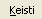
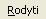
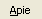
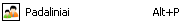
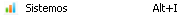
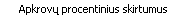

| Elementas | Aprašymas |
|---|---|
|
|
Atverti meniu „Sistema“. |
|  | Atverti meniu „Keisti“. |
|  | Atverti meniu „Rodyti“. |
|  | Atverti meniu „Apie“. |
| Elementas | Aprašymas |
|---|---|

|
Bylos, su importuojamais duomenimis, parinkimo langui atverti. |
| Įvykusių pakeitimų išsaugojimui duomenų bazėje. | |
| Duomenų atstatymui į tuos, kurie yra duomenų bazėje. | |
| Vartotojo darbui užbaigti. | |
| Sistemos uždarymui. |
| Elementas | Aprašymas |
|---|---|
| Laisviausių laiko intervalų paieškos nustatymų lauko atidarymui bei uždarymui. |
| Elementas | Aprašymas |
|---|---|
|  | Režimo pakeitimui į „Padalinių“ režimą. |
|  | Režimo pakeitimui į „Sistemų“ režimą. |
| „Pranešimų žurnalo“ atidarymui bei uždarymui. | |
| „Režimo“ atidarymui bei uždarymui. | |

|
Ekstrapoliavimo įjungimui bei išjungimui. |
| Atverti submeniu „Pateikti visus rezultatus“ |
| Elementas | Aprašymas |
|---|---|
| Skaičiuoti apkrovų rezultatus su patvirtintais duomenimis. | |
| Skaičiuoti apkrovų rezultatus su visais duomenimis. | |
| Rodyti skirtumus tarp patvirtintų ir visų duomenų. | |
|  | Rodyti procentinius skirtumus tarp patvirtintų ir visų duomenų. |
| Skaičiuoti apkrovas pagal valandas. | |
| Skaičiuoti apkrovas pagal paraiškų skaičių. | |
| Rodyti apkrovų rezultatus stulpelinėmis diagramomis. | |
| Rodyti apkrovų rezultatus linijinėmis diagramomis. | |
| Rodyti apkrovų rezultatus sumarinėmis lentelėmis. |
| Elementas | Aprašymas |
|---|---|
| Pagalbos langui atidaryti. |